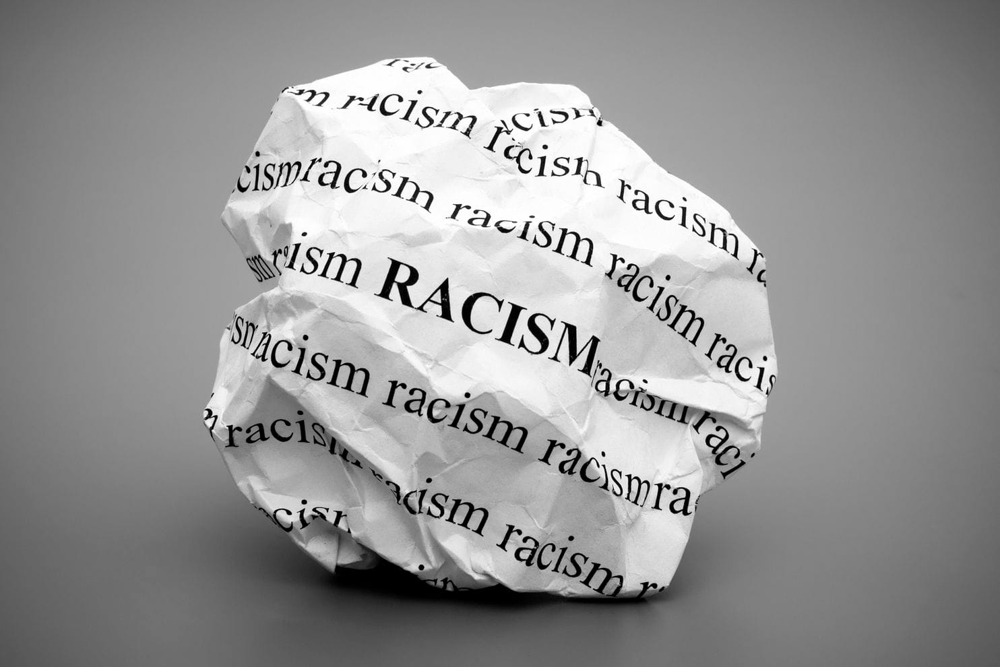
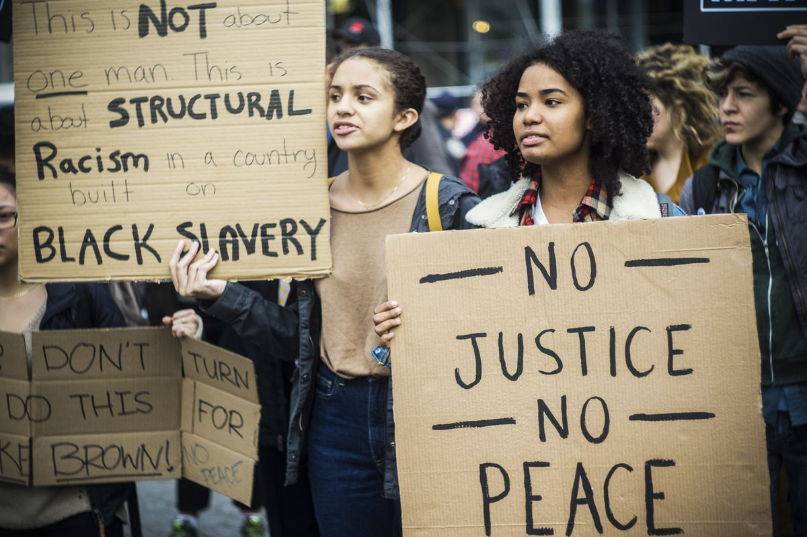
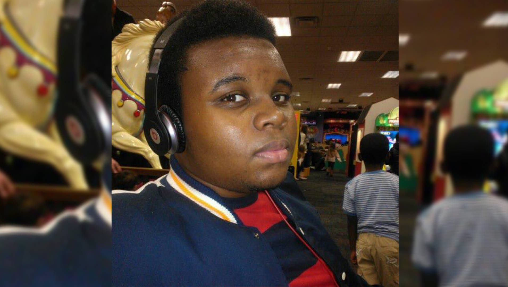

Descrimination
Kevin Neri
What is Racism?
Racism is the belief that a particular race is superior or inferior to another, that a person’s social and moral traits are predetermined by his or her inborn biological characteristics. Racial separatism is the belief, most of the time based on racism, that different races should remain segregated and apart from one another. Racism has existed throughout human history. It may be defined as the hatred of one person by another — or the belief that another person is less than human — because of skin color, language, customs, place of birth or any factor that supposedly reveals the basic nature of that person. It has influenced wars, slavery, the formation of nations, and legal codes.
During the past 500-1000 years, racism on the part of Western powers toward non-Westerners has had a far more significant impact on history than any other form of racism (such as racism among Western groups or among Easterners, such as Asians, Africans, and others). The most notorious example of racism by the West has been slavery, particularly the enslavement of Africans in the New World (slavery itself dates back thousands of years). This enslavement was accomplished because of the racist belief that Black Africans were less fully human than white Europeans and their descendants.
Both racism and bias rely on what sociologists call racialization. This is the grouping of people based on perceived physical differences, such as skin tone. This arbitrary grouping of people, historically, fueled biases and became a tool for justifying the cruel treatment and discrimination of non-white people. Colonialism, slavery and Jim Crow laws were all sold with junk science and propaganda that claimed people of a certain “race” were fundamentally different from those of another—and they should be treated accordingly. And while not all white people participated directly in this mistreatment, their learned biases and their safety from such treatment led many to commit one of those most powerful actions: silence.
Does It Still Exist Today?
Throughout the history of the United States, public officials have used the rule of law to deny equal opportunities to African Americans. Only recently, in the 20th and 21st centuries, have laws been passed that grant equal rights to all persons regardless of race. Unfortunately, advances in racial equality, such as those brought about by the civil rights movement of the 1960s, have not been enough to erase decades of exploitation and discrimination. More public policies that help to create racial equity are needed to assure true equal access to opportunities, such as quality public schools and economically viable neighborhoods. But what happens if those with power and influence view the degradation of African Americans as a positive political move? It's scary to think about, but the Republican primaries have provided a frightening example of seemingly acceptable racist rhetoric.
Studies show that police are more likely to pull over and frisk blacks or Latinos than whites. In New York City, 80% of the stops made were blacks and Latinos, and 85% of those people were frisked, compared to a mere 8% of white people stopped. Host a poetry slam to educate others on racism and reduce prejudice in your community.
With more than 15,000 law enforcement agencies across the country operating at the federal, state and local levels, there is no "typical" police department. Still, evidence for racial disparities is growing. Most of those data focus on the treatment of black civilians by white officers. In an analysis of national police-shootings data from 2011–14, for example, Cody T. Ross, a doctoral student in anthropology at the University of California, Davis, concluded there is "evidence of a significant bias in the killing of unarmed black Americans relative to unarmed white Americans." The probability of being black, unarmed and shot by police is about 3.5 times the probability of being white, unarmed and shot by police, he found.
Michael Brown
The shooting death of Michael Brown, the unarmed African-American teenager, by a white police officer led to civil unrest in Ferguson, Missouri, and outrage nationwide. These events are emblematic of the fraught and often problematic interactions that minority communities have with law enforcement, including racial profiling, harassment and police brutality.
We need an in-depth and honest conversation about the influence of race and racism in interactions between law enforcement and minority communities. We want to highlight psychologists and other social scientists working to understand problems and to develop solutions. We must include law enforcement in this conversation; they are essential partners in making positive change. We want to draw attention to good models of law enforcement that have improved the effectiveness of policing and interactions with minority communities. We want to identify legal and policy changes that could lead to common-sense solutions.
In truth, would the level of violence committed by law enforcement in communities of color, and at the border, even be possible if racial hatred weren’t part and parcel of police culture? White nationalists in law enforcement and in many roles in government, such as prosecutors, are dangerous because they routinely abuse their power to attack and debilitate communities of color, including harassment and coercion, financial exploitation, acts of sexual and racially-targeted violence and mass incarceration – all officially sanctioned, and all celebrated as part of the larger white nationalist agenda.
Racial profiling is a longstanding and deeply troubling national problem despite claims that the United States has entered a “post-racial era.” It occurs every day, in cities and towns across the country, when law enforcement and private security target people of color for humiliating and often frightening detentions, interrogations, and searches without evidence of criminal activity and based on perceived race, ethnicity, national origin, or religion. Racial profiling is patently illegal, violating the U.S. Constitution’s core promises of equal protection under the law to all and freedom from unreasonable searches and seizures. Just as importantly, racial profiling is ineffective. It alienates communities from law enforcement, hinders community policing efforts, and causes law enforcement to lose.
Design Copyright © 2019 Kevin Neri. Information from Indicated Sources.